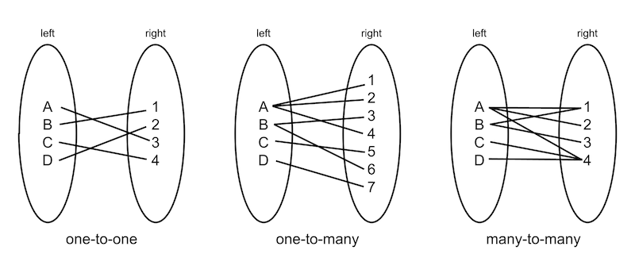

- Generated by
 1.10.0
1.10.0
|
Binary Relations
Three new associative container classes
|
This is a small C++ library (a single header file) that adds three new associative container types that help you organize and query data in memory.
std::vector and std::unordered_map.There is a data structure I that has served me very well for many years in the Insomniac Core tools group. I don’t hear other programmers refer to it, so I want to introduce it to you. I call it a binary relation. It’s a bidirectional associative container.
The term “binary relation” and the concept are borrowed from mathematics, specifically set theory. But this is not a library for mathematicians. It is for programmers needing to organize their data.
Binary relations are the association between elements of two sets. It can be projected as a set consisting of related pairs (x,y) where x is the input or the domain and where y is the output or the range. The notation x R y means that x is related to y by R, where R can be the relation that links x and y.

In this library x and y are called left and right, indicating their position in the diagram.
There are four kinds of binary relations. They are: one-to-one, one-to-many, many-to-one, and many-to-many. But because one-to-many and many-to-one are interchangeable if you swap the left and the right side, we ignore many-to-one. You won’t need it, as will become clear later.
The real world examples come from my experience as a game tools programmer, specifically as a programmer of the Insomniac world editor. So I will use that as an example.
So in the world editor then, every object in the world is represented by a handle. They need to be organized at the global level. For example, objects can be connected in a parent-child relationship. A parent object can have any number of children. Each child has exactly one parent. This is a binary relation, a one-to-many. And each child may itself be a parent and have children. So we have a hierarchy tree.
Typically, this is kind of relationship is expressed in the object data itself. Every object that is a child contains a handle (or pointer) to a parent. And each parent contains an array of handles (or pointers) to its children.
This organization requires that when a child changes parent, you need to update both the m_Parent of the child as well as the m_Children list of the parent. This kind of connection is a one-to-many binary relation. With binary relations, the relationship between parents and children is stored outside of the object data structure, in its own container. All parent-to-child relationships are stored in one container that lives alongside the game objects.
With this data structure, you can look up the parent handle for any object, and get a list of handles of its children.
This is a key concept, and I want to emphasize it here: relations between objects (such as parent-child) are not stored in the objects, but in a separate worldwide relationship table.
Once you get the hang of storing relationships outside of the object, you will find uses for it everywhere. For example, game objects can be member of multiple groups. That’s a many-to-many. Given the group’s handle, you can look up all its members. And when you have a game object, you can get a list of the groups it belongs to.
Perhaps a more surprising example is this. Say you have an object type to classify people, vehicles, and buildings. This, too, is a binary relation. In this case it’s a one-to-many. Given an object handle, you can look up what type it is. Given an object type, you can get a list of all objects of that type.
Here are some more use cases:
The library is located in the BinaryRelations directory. It consists of a single C++ header file. There are three class templates that you need to know of. The classes are: OneToMany, ManyToMany, and OneToOne.
Each binary relation type is a template, with type arguments LeftType and RightType. Both types need to be small, hashable, and immutable. I recommend that you only use simple types, such as int and enum, and possibly std::string.
This is the entire OneToMany API. OneToOne and ManyToMany are near identical. Click here for the full documentation.
That’s all.
Output:
This is a suggestion.
In the code example, note that the name of the OneToMany has the form of “SingleToPlural”, like “VehicleToOccupants”. Similarly, ManyToMany names would be “PluralToPlural”, OneToOne would be “SingleToSingle”.
The efficiency for lookup such as FindLeft() and FindRight() is constant time. All operations on a OneToOne are also constant.
Things get more complicated with OneToMany and ManyToMany. They maintain sorted arrays. Insertion and removal of elements in an array involves shifting everything between the point of insertion/removal and the end of the array. In practice, at least in the context of our world editor, this has not been a problem. That’s probably because insert and remove operations are relatively infrequent when compared to lookups.